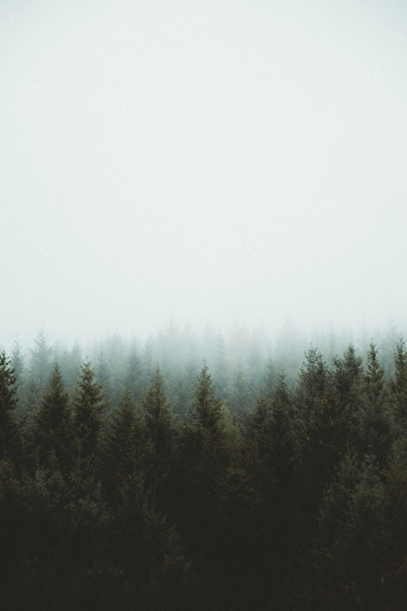
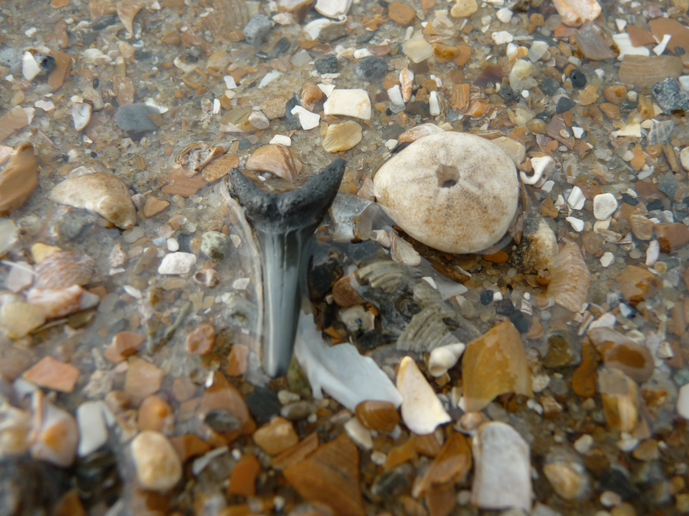
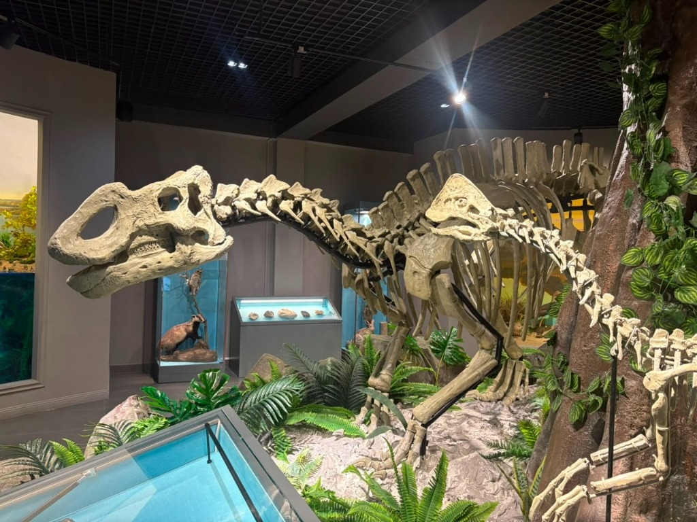
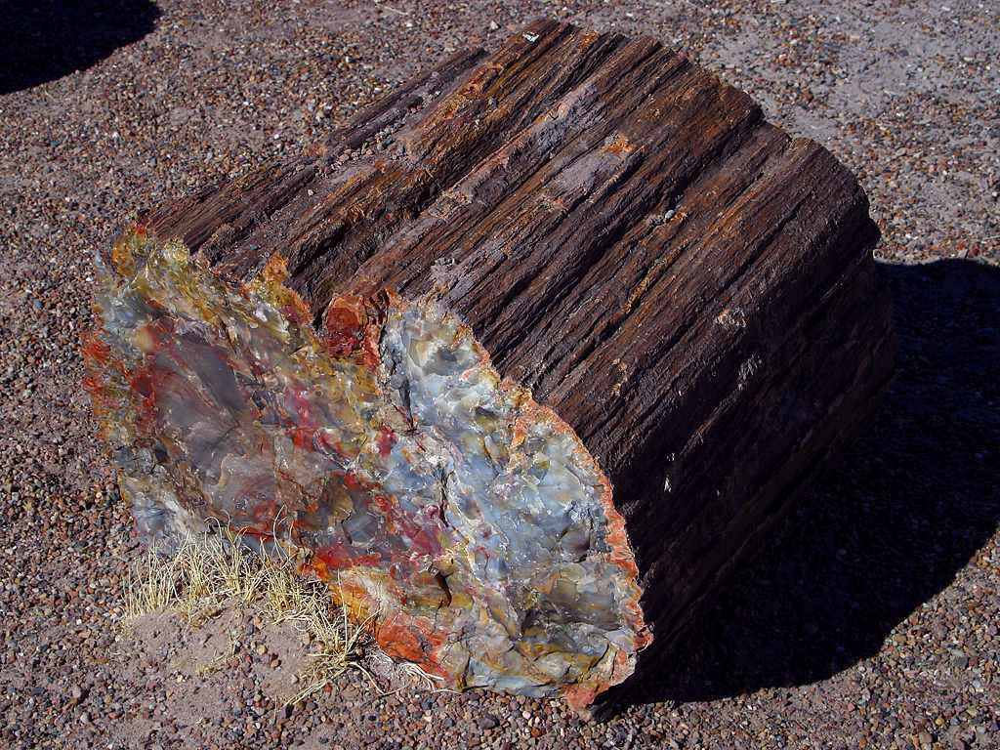

Сыр бойының геологиялық шежіресі
Мезозой эрасы: Бор дәуірінің геологиялық шкаласы
201 - 145 млн жыл бұрын
145 - 100 млн жыл бұрын
(Бостөбе формациясы)
~90 - 83 млн жыл бұрын.
Негізгі қазба орындары осында.
Шөгінді қабат — табиғаттың мұрағаты
Палеонтологтар Жердің тарихын шөгінді жыныстардың қабаттарын оқу арқылы біледі. Төменде Сырдария өңірінің типтік геологиялық қимасы көрсетілген. Қабаттарды басып, олардың құрамымен танысыңыз.
Кайнозой шөгінділері (Беткі қабат)
66 млн жылдан бүгінге дейін • Қалыңдығы: 50–200 м
Палеоген және неоген кезеңдерінің сарғыш-сұр құмдары, алевриттері мен саздары, қазіргі төрттік кезеңнің құмды-топырақ жамылғысы. Бұл кезеңде Сыр өңірінде Торғай бұғазы мен ежелгі Тетис теңізінің қалдық су алаптары болған.

Қабат ашылымыПалеоген-неогеннің құмтастары мен саздары

Тән қазбаТеңіз акулаларының минералданған тістері
Табылатын қазбалар: Теңіз акулаларының тістері, моллюскалардың қабыршақтары, кейінгі сүтқоректілер сүйектері.
Бор шөгінділері (Бостөбе формациясы) Басты қабат
145–66 млн жыл бұрын (Сантон-Кампан) • Қалыңдығы: 150–350 м
Атақты Бостөбе және Жиркіндек формациялары. Қызыл, сұр-жасыл және шұбар саздар, көлбеу қатпарлы өзендік құмтастар мен конгломераттар. Бұл қабат ежелгі Сыр бойының өзен жайылмалары мен дельталарында түзіліп, динозаврлар сүйегінің сақталуына қолайлы жағдай жасаған.
 Бостөбе шөгіндісі
Бостөбе шөгіндісі
Қызыл шұбар саз бен құмтас ашылымы

Тән қазбаАралозавр қаңқасы (Түлкілі / Қанқазған)
Табылатын қазбалар: Гадрозавридтер (Аралозавр), дромеозавридтер, птерозаврлар (Аждархо), қолтырауындар (Шамозух), тасбақалар.
Юра шөгінділері
201–145 млн жыл бұрын • Қалыңдығы: 200–500 м
Көмірлі және күңгірт түсті саздар, алевролиттер, континенттік көлдік-батпақты шөгінділер. Юра кезеңінде Сыр-Арал ойпаты субтропикалық жылы климатта болып, ну ормандар мен батпақтар көмір және силификацияланған өсімдік қабаттарын қалыптастырған.
 Юра шөгіндісі
Юра шөгіндісі
Қатпарлы күңгірт саз бен көмірлі құмтастар

Тән қазбаТасқа айналған ежелгі ағаш діңі (силификация)
Табылатын қазбалар: Тасқа айналған ағаштар, қылқанжапырақтылардың діңдері, қырықжапырақтар іздері, өсімдік тозаңдары.
Палеозой іргетасы (Ең төменгі қабат)
250 млн жылдан астам бұрын • Тереңдігі: 1000–3000 м+
Тұран плитасының кристалдық герцин және каледон фундаменті. Магмалық граниттер, диориттер, базальттар және күшті метаморфталуға ұшыраған тақтастар мен кварциттер. Бұл қабат бүкіл Сыр өңірінің берік геологиялық тірегі саналады.
 Кристалдық фундамент
Кристалдық фундамент
Тереңдегі магмалық граниттер мен метаморфтық жыныстар
Жоғары қысым мен температурада түзілген берік магмалық тау жыныстары
Фоссилиялар: Магмалық және метаморфтық жыныстар болғандықтан, органикалық қазбалар сақталмайды.